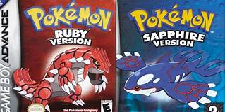

Pokémon é uma franquia gigantesca de jogos, filmes, desenhos, cartas, brinquedos e mangás. Álem de ser a segunda franquia de jogos mais lucrativa do mundo ficando apenas atrás de Mario.
Os diversos Pokémon são dividos em gerações pra ser mais preciso são 8 gerações, que são regioẽs diferentes do mundo onde cada região tem uma colleção de Pokémon diferentes, podendo incluir de gerações passadas.
A franquia começou com um par jogos pra o game boy original,Pokémon Green and Red, Lançados em 1997 pela Nintendo e feito pela Game Freak
A segunda geração de pokémon veio em outubro de 2000 com os jogos Pokémon Gold e Sliver para Game boy color
A terceira geração de pokémon chegou em março de 2003 com os Jogos Pokémon Ruby e Sapphire para Game boy Advanced
Em 2007 chegou a quarta geração para o novo nintendo DS com os Jogos Pokémon Diamond e Pearl
Em março de 2011 chegou a quinta geração para o nintendo DS com os Jogos Pokémon Black e White
A sexta geração chegou em outubro de 2013 para o Nintendo 3DS com os Jogos Pokémon X e Y
A setima geração chegou em novembro de 2016 para Nitendo 3DS com os Jogos Pokémon Sun e Moon
A oitava e ultima geração chegou em novembro de 2019 pelos Jogos Pokémon Sword e Shield
Não abra esse link